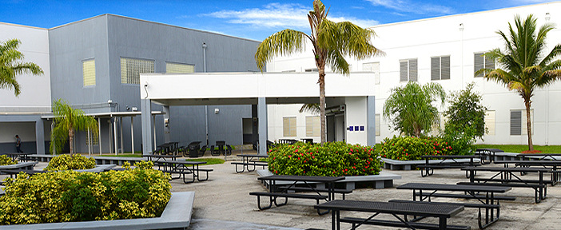

Nahar's Resume Site
NAHAR SAIAS

- Going to Dr. Michael Krop Senior High
- Highschool Student
- GPA: low dont ask
- Professional Background: None whatsoever
- I used to have an addiction to video games, but since I have started Launch Code as well as school, I had to get over the addiction
- As a coder, I have no idea what I'd like to specialize in, however from what I can tell HTML/CSS is way more boring than python
I'm not the most creative or artistic person, so I honestly have no idea what to do for this assignment, buuut lets see how this turns out.
My Highschool Career
Currently, highschool is pretty chill. The only part that sucks is that I decided I wanted to try and be smart and am two years ahead in math, and doubling up on science classes.
What classes I have taken:
- Algebra 1 (7th grade)
- Physical Science (8th grade)
- Geometry (8th grade)
- Spanish 1 (8th grade)
- English 1 (9th grade)
- Ancient World History (9th grade)
- Algebra 2 (9th grade)
- Biology 1 (9th grade)
- Spanish 2 (9th grade)
What classes I am taking currently:
- AP Biology (sigh have mercy)
- English 2
- Chemistry (sigh)
- Trigonometry
- Culinary Arts 1 (lmao)
- AP Human Geography (get me out)
As of the 2018-2019 school year, I am currently a sophmore (10th grade). Waking up at 6:00 is the definition of hell, and never want to experience this pain again.